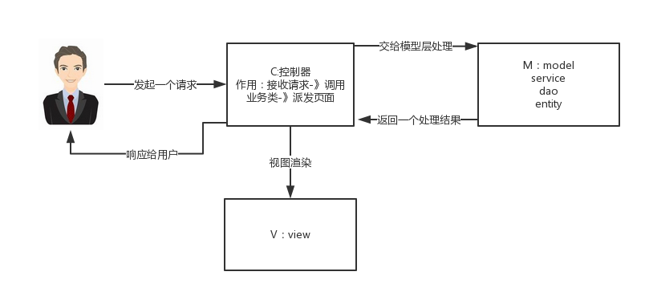

Spring.md
1. 什么是 Spring 框架?¶
Spring 是一种轻量级开发框架，旨在提高开发人员的开发效率以及系统的可维护性。Spring 官网：https://spring.io/。
我们一般说 Spring 框架指的都是 Spring Framework，它是很多模块的集合，使用这些模块可以很方便地协助我们进行开发。这些模块是：核心容器、数据访问/集成,、Web、AOP（面向切面编程）、工具、消息和测试模块。比如：Core Container 中的 Core 组件是Spring 所有组件的核心，Beans 组件和 Context 组件是实现IOC和依赖注入的基础，AOP组件用来实现面向切面编程。
Spring 官网列出的 Spring 的 6 个特征:
- 核心技术 ：依赖注入(DI)，AOP，事件(events)，资源，i18n，验证，数据绑定，类型转换，SpEL。
- 测试 ：模拟对象，TestContext框架，Spring MVC 测试，WebTestClient。
- 数据访问 ：事务，DAO支持，JDBC，ORM，编组XML。
- Web支持 : Spring MVC和Spring WebFlux Web框架。
- 集成 ：远程处理，JMS，JCA，JMX，电子邮件，任务，调度，缓存。
- 语言 ：Kotlin，Groovy，动态语言。
2. 列举一些重要的Spring模块？¶
下图对应的是 Spring4.x 版本。目前最新的5.x版本中 Web 模块的 Portlet 组件已经被废弃掉，同时增加了用于异步响应式处理的 WebFlux 组件。

- Spring Core： 基础,可以说 Spring 其他所有的功能都需要依赖于该类库。主要提供 IoC 依赖注入功能。
- Spring Aspects ： 该模块为与AspectJ的集成提供支持。
- Spring AOP ：提供了面向切面的编程实现。
- Spring JDBC : Java数据库连接。
- Spring JMS ：Java消息服务。
- Spring ORM : 用于支持Hibernate等ORM工具。
- Spring Web : 为创建Web应用程序提供支持。
- Spring Test : 提供了对 JUnit 和 TestNG 测试的支持。
3. @RestController vs @Controller¶
Controller 返回一个页面
单独使用 @Controller 不加 @ResponseBody的话一般使用在要返回一个视图的情况，这种情况属于比较传统的Spring MVC 的应用，对应于前后端不分离的情况。

@RestController 返回JSON 或 XML 形式数据
但@RestController只返回对象，对象数据直接以 JSON 或 XML 形式写入 HTTP 响应(Response)中，这种情况属于 RESTful Web服务，这也是目前日常开发所接触的最常用的情况（前后端分离）。

@Controller +@ResponseBody 返回JSON 或 XML 形式数据
如果你需要在Spring4之前开发 RESTful Web服务的话，你需要使用@Controller 并结合@ResponseBody注解，也就是说@Controller +@ResponseBody= @RestController（Spring 4 之后新加的注解）。
@ResponseBody注解的作用是将Controller的方法返回的对象通过适当的转换器转换为指定的格式之后，写入到HTTP 响应(Response)对象的 body 中，通常用来返回 JSON 或者 XML 数据，返回 JSON 数据的情况比较多。

Reference:
- https://dzone.com/articles/spring-framework-restcontroller-vs-controller （图片来源）
- https://javarevisited.blogspot.com/2017/08/difference-between-restcontroller-and-controller-annotations-spring-mvc-rest.html?m=1
4. Spring IOC & AOP¶
4.1 谈谈自己对于 Spring IoC 和 AOP 的理解¶
IoC 就是个 工厂模式 + Java 反射机制
用注解来实现自动装配
反射是Java语言的一个特性，它允许程序在运行时（注意不是编译的时候）来进行自我检查并且对内部的成员进行操作。例如它允许一个Java类获取它所有的成员变量和方法并且显示出来
IOC中最基本的技术就是“反射(Reflection)”编程，通俗来讲就是根据给出的类名（字符串方式）来动态地生成对象，这种编程方式可以让对象在生成时才被决定到底是哪一种对象。只是在Spring中要生产的对象都在配置文件中给出定义，目的就是提高灵活性和可维护性。
把IOC容器的工作模式看做是工厂模式的升华，可以把IOC容器看作是一个工厂，这个工厂里要生产的对象都在配置文件中给出定义，然后利用编程语言提供的反射机制，根据配置文件中给出的类名生成相应的对象
AOP 就是分层 Dao层 Controller层 Service层 等
通过 动态代理 proxy 实现重复模块的复用
如 鉴权模块
IoC¶
IoC（Inverse of Control:控制反转）是一种设计思想，就是 将原本在程序中手动创建对象的控制权，交由Spring框架来管理。 IoC 在其他语言中也有应用，并非 Spring 特有。 IoC 容器是 Spring 用来实现 IoC 的载体， IoC 容器实际上就是个Map（key，value）,Map 中存放的是各种对象。
将对象之间的相互依赖关系交给 IoC 容器来管理，并由 IoC 容器完成对象的注入。这样可以很大程度上简化应用的开发，把应用从复杂的依赖关系中解放出来。 IoC 容器就像是一个工厂一样，当我们需要创建一个对象的时候，只需要配置好配置文件/注解即可，完全不用考虑对象是如何被创建出来的。 在实际项目中一个 Service 类可能有几百甚至上千个类作为它的底层，假如我们需要实例化这个 Service，你可能要每次都要搞清这个 Service 所有底层类的构造函数，这可能会把人逼疯。如果利用 IoC 的话，你只需要配置好，然后在需要的地方引用就行了，这大大增加了项目的可维护性且降低了开发难度。
Spring 时代我们一般通过 XML 文件来配置 Bean，后来开发人员觉得 XML 文件来配置不太好，于是 SpringBoot 注解配置就慢慢开始流行起来。
推荐阅读：https://www.zhihu.com/question/23277575/answer/169698662
Spring IoC的初始化过程：

IoC源码阅读
AOP¶
AOP(Aspect-Oriented Programming:面向切面编程)能够将那些与业务无关，却为业务模块所共同调用的逻辑或责任（例如事务处理、日志管理、权限控制等）封装起来，便于减少系统的重复代码，降低模块间的耦合度，并有利于未来的可拓展性和可维护性。
Spring AOP就是基于动态代理的，如果要代理的对象，实现了某个接口，那么Spring AOP会使用JDK Proxy，去创建代理对象，而对于没有实现接口的对象，就无法使用 JDK Proxy 去进行代理了，这时候Spring AOP会使用Cglib ，这时候Spring AOP会使用 Cglib 生成一个被代理对象的子类来作为代理，如下图所示：

当然你也可以使用 AspectJ ,Spring AOP 已经集成了AspectJ ，AspectJ 应该算的上是 Java 生态系统中最完整的 AOP 框架了。
使用 AOP 之后我们可以把一些通用功能抽象出来，在需要用到的地方直接使用即可，这样大大简化了代码量。我们需要增加新功能时也方便，这样也提高了系统扩展性。日志功能、事务管理等等场景都用到了 AOP 。
4.2 Spring AOP 和 AspectJ AOP 有什么区别？¶
Spring AOP 属于运行时增强，而 AspectJ 是编译时增强。 Spring AOP 基于代理(Proxying)，而 AspectJ 基于字节码操作(Bytecode Manipulation)。
Spring AOP 已经集成了 AspectJ ，AspectJ 应该算的上是 Java 生态系统中最完整的 AOP 框架了。AspectJ 相比于 Spring AOP 功能更加强大，但是 Spring AOP 相对来说更简单，
如果我们的切面比较少，那么两者性能差异不大。但是，当切面太多的话，最好选择 AspectJ ，它比Spring AOP 快很多。
5. Spring bean¶
Spring 单例设计模式的体现
5.1 Spring 中的 bean 的作用域有哪些?¶
- singleton : 唯一 bean 实例，Spring 中的 bean 默认都是单例的。
- prototype : 每次请求都会创建一个新的 bean 实例。
- request : 每一次HTTP请求都会产生一个新的bean，该bean仅在当前HTTP request内有效。
- session : 每一次HTTP请求都会产生一个新的 bean，该bean仅在当前 HTTP session 内有效。
- global-session： 全局session作用域，仅仅在基于portlet的web应用中才有意义，Spring5已经没有了。Portlet是能够生成语义代码(例如：HTML)片段的小型Java Web插件。它们基于portlet容器，可以像servlet一样处理HTTP请求。但是，与 servlet 不同，每个 portlet 都有不同的会话
5.2 Spring 中的单例 bean 的线程安全问题了解吗？¶
的确是存在安全问题的。因为，当多个线程操作同一个对象的时候，对这个对象的成员变量的写操作会存在线程安全问题。
但是，一般情况下，我们常用的 Controller、Service、Dao 这些 Bean 是无状态的。无状态的 Bean 不能保存数据，因此是线程安全的。
常见的有 2 种解决办法：
- 在类中定义一个
ThreadLocal成员变量，将需要的可变成员变量保存在ThreadLocal中（推荐的一种方式）。 - 改变 Bean 的作用域为 “prototype”：每次请求都会创建一个新的 bean 实例，自然不会存在线程安全问题。
5.3 @Component 和 @Bean 的区别是什么？¶
- 作用对象不同:
@Component注解作用于类，而@Bean注解作用于方法。 @Component通常是通过类路径扫描来自动侦测以及自动装配到Spring容器中（我们可以使用@ComponentScan注解定义要扫描的路径从中找出标识了需要装配的类自动装配到 Spring 的 bean 容器中）。@Bean注解通常是我们在标有该注解的方法中定义产生这个 bean,@Bean告诉了Spring这是某个类的示例，当我需要用它的时候还给我。@Bean注解比Component注解的自定义性更强，而且很多地方我们只能通过@Bean注解来注册bean。比如当我们引用第三方库中的类需要装配到Spring容器时，则只能通过@Bean来实现。
@Bean注解使用示例：
1 2 3 4 5 6 7 8 | |
上面的代码相当于下面的 xml 配置
1 2 3 | |
下面这个例子是通过 @Component 无法实现的。
1 2 3 4 5 6 7 8 9 10 11 | |
5.4 将一个类声明为Spring的 bean 的注解有哪些?¶
我们一般使用 @Autowired 注解自动装配 bean，要想把类标识成可用于 @Autowired 注解自动装配的 bean 的类,采用以下注解可实现：
@Component：通用的注解，可标注任意类为Spring组件。如果一个Bean不知道属于哪个层，可以使用@Component注解标注。@Repository: 对应持久层即 Dao 层，主要用于数据库相关操作。@Service: 对应服务层，主要涉及一些复杂的逻辑，需要用到 Dao层。@Controller: 对应 Spring MVC 控制层，主要用于接受用户请求并调用 Service 层返回数据给前端页面。
5.5 Spring 中的 bean 生命周期?¶
这部分网上有很多文章都讲到了，下面的内容整理自： https://yemengying.com/2016/07/14/spring-bean-life-cycle/ (原作者可能不再维护这个博客，连接无法访问，可通过其 Github 仓库访问 https://github.com/giraffe0813/giraffe0813.github.io) ，除了这篇文章，再推荐一篇很不错的文章 ：https://www.cnblogs.com/zrtqsk/p/3735273.html 。
- Bean 容器找到配置文件中 Spring Bean 的定义。
- Bean 容器利用 Java Reflection API 创建一个Bean的实例。
- 如果涉及到一些属性值 利用
set()方法设置一些属性值。 - 如果 Bean 实现了
BeanNameAware接口，调用setBeanName()方法，传入Bean的名字。 - 如果 Bean 实现了
BeanClassLoaderAware接口，调用setBeanClassLoader()方法，传入ClassLoader对象的实例。 - 与上面的类似，如果实现了其他
*.Aware接口，就调用相应的方法。 - 如果有和加载这个 Bean 的 Spring 容器相关的
BeanPostProcessor对象，执行postProcessBeforeInitialization()方法 - 如果Bean实现了
InitializingBean接口，执行afterPropertiesSet()方法。 - 如果 Bean 在配置文件中的定义包含 init-method 属性，执行指定的方法。
- 如果有和加载这个 Bean的 Spring 容器相关的
BeanPostProcessor对象，执行postProcessAfterInitialization()方法 - 当要销毁 Bean 的时候，如果 Bean 实现了
DisposableBean接口，执行destroy()方法。 - 当要销毁 Bean 的时候，如果 Bean 在配置文件中的定义包含 destroy-method 属性，执行指定的方法。
图示：

与之比较类似的中文版本:

6. Spring MVC¶
6.1 说说自己对于 Spring MVC 了解?¶
谈到这个问题，我们不得不提提之前 Model1 和 Model2 这两个没有 Spring MVC 的时代。
- Model1 时代 : 很多学 Java 后端比较晚的朋友可能并没有接触过 Model1 模式下的 JavaWeb 应用开发。在 Model1 模式下，整个 Web 应用几乎全部用 JSP 页面组成，只用少量的 JavaBean 来处理数据库连接、访问等操作。这个模式下 JSP 既是控制层又是表现层。显而易见，这种模式存在很多问题。比如①将控制逻辑和表现逻辑混杂在一起，导致代码重用率极低；②前端和后端相互依赖，难以进行测试并且开发效率极低；
- Model2 时代 ：学过 Servlet 并做过相关 Demo 的朋友应该了解“Java Bean(Model)+ JSP（View,）+Servlet（Controller） ”这种开发模式,这就是早期的 JavaWeb MVC 开发模式。Model:系统涉及的数据，也就是 dao 和 bean。View：展示模型中的数据，只是用来展示。Controller：处理用户请求都发送给 ，返回数据给 JSP 并展示给用户。
Model2 模式下还存在很多问题，Model2的抽象和封装程度还远远不够，使用Model2进行开发时不可避免地会重复造轮子，这就大大降低了程序的可维护性和复用性。于是很多JavaWeb开发相关的 MVC 框架应运而生比如Struts2，但是 Struts2 比较笨重。随着 Spring 轻量级开发框架的流行，Spring 生态圈出现了 Spring MVC 框架， Spring MVC 是当前最优秀的 MVC 框架。相比于 Struts2 ， Spring MVC 使用更加简单和方便，开发效率更高，并且 Spring MVC 运行速度更快。
MVC 是一种设计模式,Spring MVC 是一款很优秀的 MVC 框架。Spring MVC 可以帮助我们进行更简洁的Web层的开发，并且它天生与 Spring 框架集成。Spring MVC 下我们一般把后端项目分为 Service层（处理业务）、Dao层（数据库操作）、Entity层（实体类）、Controller层(控制层，返回数据给前台页面)。
Spring MVC 的简单原理图如下：

6.2 SpringMVC 工作原理了解吗?¶
原理如下图所示：

上图的一个笔误的小问题：Spring MVC 的入口函数也就是前端控制器 DispatcherServlet 的作用是接收请求，响应结果。
流程说明（重要）：
- 客户端（浏览器）发送请求，直接请求到
DispatcherServlet。 DispatcherServlet根据请求信息调用HandlerMapping，解析请求对应的Handler。- 解析到对应的
Handler（也就是我们平常说的Controller控制器）后，开始由HandlerAdapter适配器处理。 HandlerAdapter会根据Handler来调用真正的处理器来处理请求，并处理相应的业务逻辑。- 处理器处理完业务后，会返回一个
ModelAndView对象，Model是返回的数据对象，View是个逻辑上的View。 ViewResolver会根据逻辑View查找实际的View。DispaterServlet把返回的Model传给View（视图渲染）。- 把
View返回给请求者（浏览器）
7. Spring 框架中用到了哪些设计模式？¶
关于下面一些设计模式的详细介绍，可以看笔主前段时间的原创文章《面试官:“谈谈Spring中都用到了那些设计模式?”。》 。
- 工厂设计模式 : Spring使用工厂模式通过
BeanFactory、ApplicationContext创建 bean 对象。 - 代理设计模式 : Spring AOP 功能的实现。
- 单例设计模式 : Spring 中的 Bean 默认都是单例的。
- 模板方法模式 : Spring 中
jdbcTemplate、hibernateTemplate等以 Template 结尾的对数据库操作的类，它们就使用到了模板模式。 - 包装器设计模式 : 我们的项目需要连接多个数据库，而且不同的客户在每次访问中根据需要会去访问不同的数据库。这种模式让我们可以根据客户的需求能够动态切换不同的数据源。
- 观察者模式: Spring 事件驱动模型就是观察者模式很经典的一个应用。
- 适配器模式 :Spring AOP 的增强或通知(Advice)使用到了适配器模式、spring MVC 中也是用到了适配器模式适配
Controller。 - ......
8. Spring 事务¶
8.1 Spring 管理事务的方式有几种？¶
- 编程式事务，在代码中硬编码。(不推荐使用)
- 声明式事务，在配置文件中配置（推荐使用）
声明式事务又分为两种：
- 基于XML的声明式事务
- 基于注解的声明式事务
8.2 Spring 事务中的隔离级别有哪几种?¶
TransactionDefinition 接口中定义了五个表示隔离级别的常量：
- TransactionDefinition.ISOLATION_DEFAULT: 使用后端数据库默认的隔离级别，Mysql 默认采用的 REPEATABLE_READ隔离级别 Oracle 默认采用的 READ_COMMITTED隔离级别.
- TransactionDefinition.ISOLATION_READ_UNCOMMITTED: 最低的隔离级别，允许读取尚未提交的数据变更，可能会导致脏读、幻读或不可重复读
- TransactionDefinition.ISOLATION_READ_COMMITTED: 允许读取并发事务已经提交的数据，可以阻止脏读，但是幻读或不可重复读仍有可能发生
- TransactionDefinition.ISOLATION_REPEATABLE_READ: 对同一字段的多次读取结果都是一致的，除非数据是被本身事务自己所修改，可以阻止脏读和不可重复读，但幻读仍有可能发生。
- TransactionDefinition.ISOLATION_SERIALIZABLE: 最高的隔离级别，完全服从ACID的隔离级别。所有的事务依次逐个执行，这样事务之间就完全不可能产生干扰，也就是说，该级别可以防止脏读、不可重复读以及幻读。但是这将严重影响程序的性能。通常情况下也不会用到该级别。
8.3 Spring 事务中哪几种事务传播行为?¶
支持当前事务的情况：
- TransactionDefinition.PROPAGATION_REQUIRED： 如果当前存在事务，则加入该事务；如果当前没有事务，则创建一个新的事务。
- TransactionDefinition.PROPAGATION_SUPPORTS： 如果当前存在事务，则加入该事务；如果当前没有事务，则以非事务的方式继续运行。
- TransactionDefinition.PROPAGATION_MANDATORY： 如果当前存在事务，则加入该事务；如果当前没有事务，则抛出异常。（mandatory：强制性）
不支持当前事务的情况：
- TransactionDefinition.PROPAGATION_REQUIRES_NEW： 创建一个新的事务，如果当前存在事务，则把当前事务挂起。
- TransactionDefinition.PROPAGATION_NOT_SUPPORTED： 以非事务方式运行，如果当前存在事务，则把当前事务挂起。
- TransactionDefinition.PROPAGATION_NEVER： 以非事务方式运行，如果当前存在事务，则抛出异常。
其他情况：
- TransactionDefinition.PROPAGATION_NESTED： 如果当前存在事务，则创建一个事务作为当前事务的嵌套事务来运行；如果当前没有事务，则该取值等价于TransactionDefinition.PROPAGATION_REQUIRED。
8.4 @Transactional(rollbackFor = Exception.class)注解了解吗？¶
我们知道：Exception分为运行时异常RuntimeException和非运行时异常。事务管理对于企业应用来说是至关重要的，即使出现异常情况，它也可以保证数据的一致性。
当@Transactional注解作用于类上时，该类的所有 public 方法将都具有该类型的事务属性，同时，我们也可以在方法级别使用该标注来覆盖类级别的定义。如果类或者方法加了这个注解，那么这个类里面的方法抛出异常，就会回滚，数据库里面的数据也会回滚。
在@Transactional注解中如果不配置rollbackFor属性,那么事务只会在遇到RuntimeException的时候才会回滚,加上rollbackFor=Exception.class,可以让事务在遇到非运行时异常时也回滚。
关于 @Transactional 注解推荐阅读的文章：
9. JPA¶
9.1 如何使用JPA在数据库中非持久化一个字段？¶
假如我们有有下面一个类：
1 2 3 4 5 6 7 8 9 10 11 12 13 14 15 16 17 | |
如果我们想让secrect 这个字段不被持久化，也就是不被数据库存储怎么办？我们可以采用下面几种方法：
1 2 3 4 5 | |
一般使用后面两种方式比较多，我个人使用注解的方式比较多。
参考¶
- 《Spring 技术内幕》
- http://www.cnblogs.com/wmyskxz/p/8820371.html
- https://www.journaldev.com/2696/spring-interview-questions-and-answers
- https://www.edureka.co/blog/interview-questions/spring-interview-questions/
- https://www.cnblogs.com/clwydjgs/p/9317849.html
- https://howtodoinjava.com/interview-questions/top-spring-interview-questions-with-answers/
- http://www.tomaszezula.com/2014/02/09/spring-series-part-5-component-vs-bean/
- https://stackoverflow.com/questions/34172888/difference-between-bean-and-autowired
- https://www.interviewbit.com/spring-interview-questions/